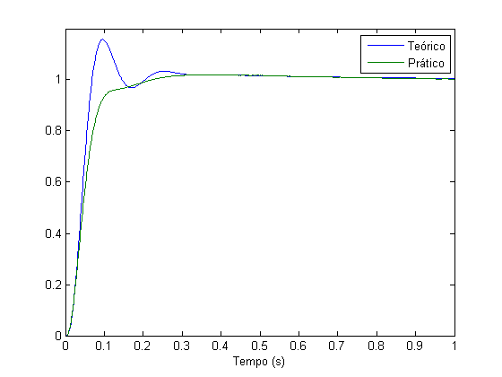
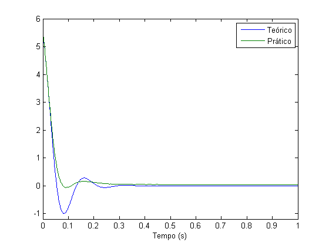
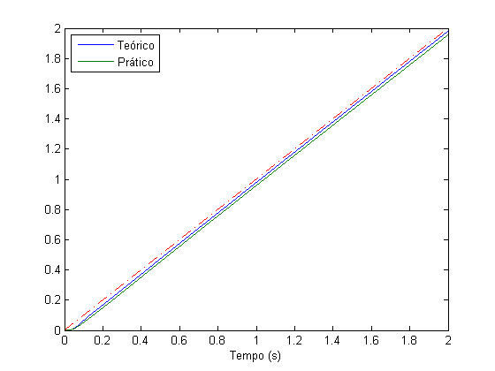

Contents
ES868 – Relatório Lab 5
Controle de plantas eletrˆonicas utilizando um controlador atraso-avanço digital
Turma A - 13/04/2015
- Augusto Miranda Garcia - 104627
- Guilherme de Oliveira Souza – 117093
- Vinícius Ragazi David - 120258
load ../G.mat load ../pids.mat load sinais_tratados.mat s = tf('s');
Resposta ao degrau
sistema = feedback(Caa*G, 1); Y = lsim(sistema, referencia, t); plot(t, [Y saida]) axis([0, 1, 0, 1.2]); legend('Teórico', 'Prático'); xlabel('Tempo (s)');

Desempenho
stepinfo(sistema) stepinfo(saida, t, 1)
ans =
RiseTime: 0.0423
SettlingTime: 0.4088
SettlingMin: 0.9087
SettlingMax: 1.1581
Overshoot: 15.8098
Undershoot: 0
Peak: 1.1581
PeakTime: 0.0961
ans =
RiseTime: 0.0698
SettlingTime: 0.3696
SettlingMin: 0.9001
SettlingMax: 1.0208
Overshoot: 2.0849
Undershoot: 0.6885
Peak: 1.0208
PeakTime: 0.3612
Esforço de controle
Y = lsim(Caa*(1-sistema), referencia, t); plot(t, [Y controle]) axis([0, 1, -1.2, 6]); legend('Teórico', 'Prático'); xlabel('Tempo (s)');

Resposta à rampa
rampa = lsim(1/s, referencia, t); Y1 = lsim(sistema, rampa, t); Y2 = lsim(1/s, saida, t); plot(t, [Y1 Y2], t, rampa, 'r-.') axis([0, 2, 0, 2]); legend('Teórico', 'Prático', 'Location', 'NorthWest'); xlabel('Tempo (s)');
